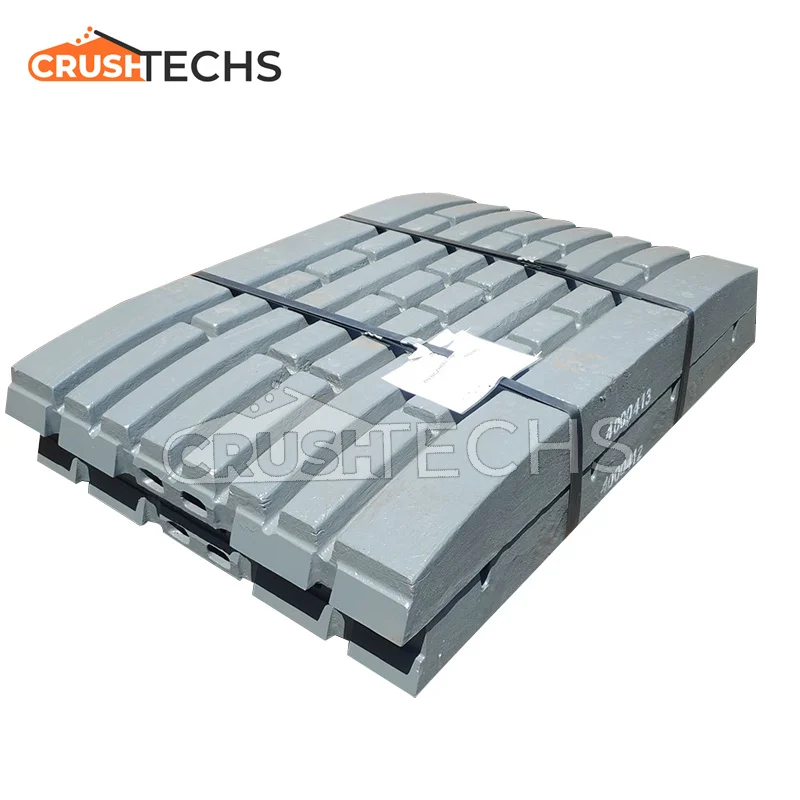

安然科技
PROCUREMENT
OEM品牌
材料分类
关于我们
生产
联系我们
EN
中文
RU
首页
›
OEM品牌
›
山特维克
山特维克
Sandvik 山特维克
全球矿山和岩石开挖技术领导者。兼容CH/CS圆锥破、CJ颚破及CI/QI反击破配件。
优势产品
山特维克 优势产品与核心配件
高端破碎机制造商；安然科技提供CH/CS圆锥破衬板，针对不同破碎阶段优化合金选择
明星产品
CH870圆锥破衬板
核心配件
CH870 Concave & Mantle
CJ412 Jaw Plate
CI521 Impact Blow Bar
设备
山特维克 设备
CH/CS圆锥破
型号
CH430-CH870, CS430-CS660
耐磨件
轧臼壁、破碎壁、轴套
查看耐磨件 →
CJ颚破
型号
CJ409-CJ412
耐磨件
颚板、侧护板
查看耐磨件 →
CI/QI反击破
型号
CI731-CI744, QI442
耐磨件
板锤、反击板
查看耐磨件 →
Gallery
山特维克 耐磨件

OEM品牌
OEM品牌目录
美卓
FLSmidth
蒂森克虏伯
宾夕法尼亚
MMD
ABON
哈兹马克
TAKRAF
南方路机
铁詹
McLanahan
莱歇
Gundlach
中信重工
上海路桥
乌拉尔重工
准备降低您的耐磨件采购成本？
免费获取技术咨询